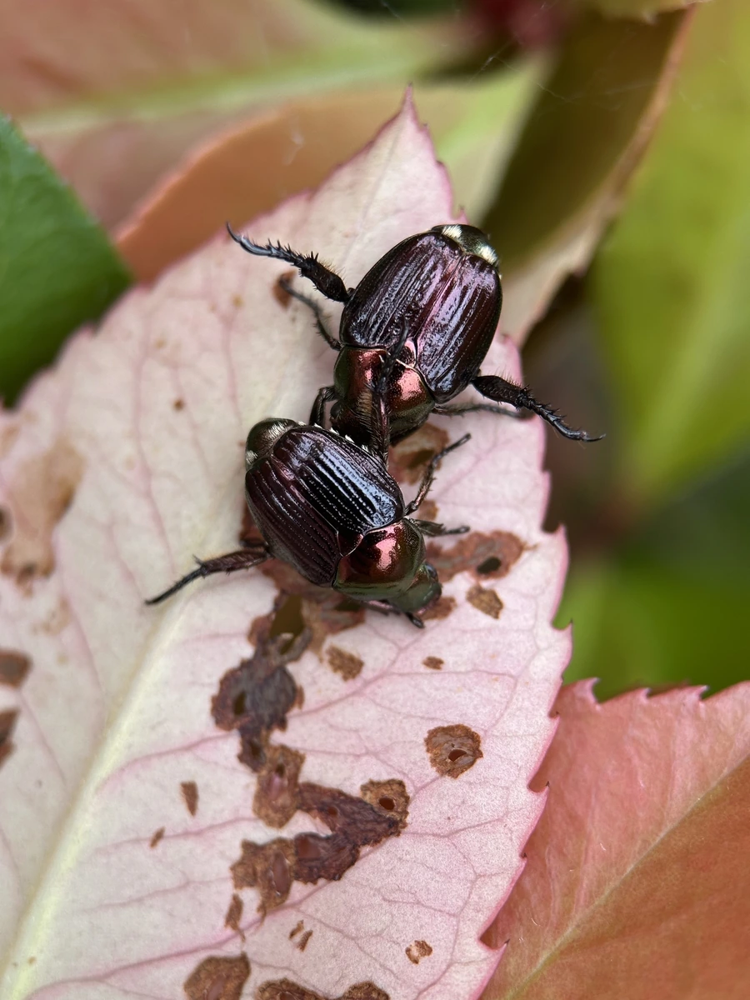

昆虫 · 动物界
中华弧丽金龟 Popillia quadriguttata

体铜绿色有金属光泽的小型丽金龟，鞘翅末端各有两个白斑，成虫啃食豆叶与果花，幼虫在土中为害根系。
- 分类
- 门节肢动物门纲昆虫纲目鞘翅目科金龟科属丽金龟属
- 栖息环境
- 农田、果园、林缘和草地
- 地理分布
- 中国华北、东北、华东和西南，以及朝鲜半岛和俄罗斯远东
- 保护级别
- 尚无保护级别；为大豆与果树上的常见害虫
物种志
中华弧丽金龟的体长约一厘米，体形短圆而隆起，体色铜绿至深绿，带强烈的金属光泽，前胸背板中央常有紫铜色的反光，鞘翅末端各有两个明显的白斑，四个白斑排成两对，四斑丽金龟之名由此而来。它的足粗短，前足胫节外缘有齿，触角短小，鳃片状。雌虫腹部肥大，雄虫体型略窄。
它分布于中国华北、东北、华东和西南，以及朝鲜半岛和俄罗斯远东，栖息在农田、果园、林缘和草地，成虫在夏季羽化，白天活动，成群啃食大豆、花生、葡萄和果树的叶片与花器，受惊时迅速坠落或飞走。幼虫蛴螬生活在土中，取食草根和作物根系，一年发生一代，以幼虫在土中越冬。它是大豆和果树上的常见害虫，尚无保护级别，防治以成虫期喷药和灯光诱杀为主。
形态与习性
- 体长约一厘米，短圆隆起
- 体色铜绿至深绿，带强烈金属光泽
- 白斑鞘翅末端各两个，排成两对
- 食性成虫啃食豆叶、花生叶与果花
- 幼虫蛴螬在土中取食草根和作物根系
- 发生世代一年一代，以幼虫在土中越冬
趣味知识
- 它鞘翅末端的四个白斑像点了四滴白漆，是最好认的特征。
- 成虫白天成群啃花，一朵果花常常被几只金龟同时占住。
- 幼虫在土里吃根，地表上看不出动静，翻开土才发现。